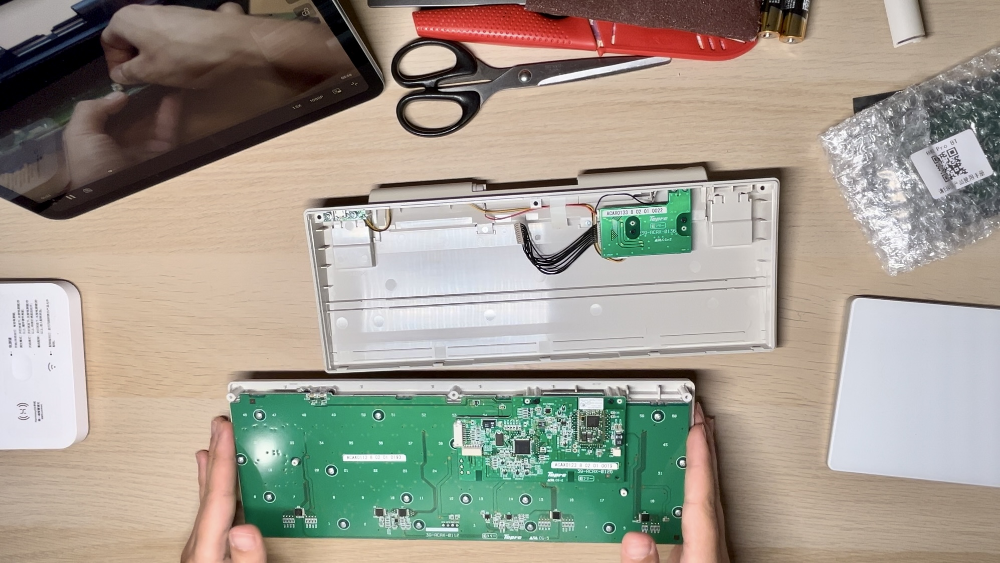

HHKB键盘更新记
前沿：故事从2016年Apple发布新一代MacBook Pro开始讲起，2016年，MacBook Pro迎来外观诸多更新，砍掉了多种接口，只保留4个雷电3接口，拥有更大的触控板，引入了TouchBar，还引入了蝴蝶键盘，没错，就是蝴蝶键盘。蝴蝶键盘相比于传统剪刀脚键盘有众多优缺点，不必细说，单说最让人诟病的一点，在使用一定时间后，由于灰尘的落入，蝴蝶键盘会出现双击或不灵的情况。我的MacBook Pro (15-inch, 2017)也未能幸免，在正常使用一年时间后，部分按键也出现了问题，尝试过各种清理，都无济于事。大量用户出现键盘故障，甚至还有Unshaky这样的软件，来尽可能的降低蝴蝶键盘故障带来的不变，虽然苹果之后推出了对应的维修更换计划，但那是另外的故事了。
购买：于是在2018年，购买了我这块HHKB-BT，HHKB蓝牙版本，无刻印白色版（之后配了几个彩色键帽）
 快乐使用：该版本只支持蓝牙单模连接，且只能同时连接一台设备，即便如此，也不妨碍我快乐的使用它。最开始纠结于如何摆放，是摆在MacBook Pro前面，单独把MacBook Pro支起来呢，还是如何摆放，还有兼顾到触控板的使用，直到我发现HHKB刚好可以完美的放在MacBookPro原键盘之上，底部的4个橡胶垫，刚好可以完美的避开MBP原键盘，能完美的放置在MBP之上，也不知道是否是故意这样设计的，瞬间感觉如鱼得水，使用起来很舒服，而且并不影响原触控板的使用
快乐使用：该版本只支持蓝牙单模连接，且只能同时连接一台设备，即便如此，也不妨碍我快乐的使用它。最开始纠结于如何摆放，是摆在MacBook Pro前面，单独把MacBook Pro支起来呢，还是如何摆放，还有兼顾到触控板的使用，直到我发现HHKB刚好可以完美的放在MacBookPro原键盘之上，底部的4个橡胶垫，刚好可以完美的避开MBP原键盘，能完美的放置在MBP之上，也不知道是否是故意这样设计的，瞬间感觉如鱼得水，使用起来很舒服，而且并不影响原触控板的使用
静电容轴，没有炫酷的背光，没有方向键，甚至可以没有刻印，如此简洁的设计，还能完美放在MacBookPro原键盘位置，这键盘简直太完美，放在桌子上，与触控版配合，也是如此协调 快捷键：MacOS（OSX）切换应用，有个方便的快捷键，「command+tab」向前切换，那向后切换呢？在其他系统中，可以按住「Shift+command+tab」，但在MacOS中，有更方便更符合直觉的操作，就是「command+`」，而在HHKB上，`键被移动到了右上角，tab键上方变成了esc键，符合直觉的向后切换操作没了，如何解决？神器karabiner-elements登场，通过karabiner-elements，可以进行按键映射，早就有人将「左command键+esc」映射为了「command+`」，那熟悉的符合直觉的快捷键右回来了，但我不明白的是，为什么他只做了「左command键+esc」，并非左右两侧command键都能用，于是我在此基础上，做了点改动，左右两侧command都能进行映射，「command键+esc」映射为「command+`」，除了改映射外，还添加了Map Left Option plus h/j/k/l to Arrows，按住左option键时，便可使用vim的方向键（hjkl）作为方向键。还有诸多按键映射在此，各位可自行按需食用。
签名：我是从哪里得知有HHKB这样神级键盘存在的呢，答案是播客节目内核恐慌（kernel panic）。最开始通过朋友推荐，开始收听IPN的节目（当时《内核恐慌》属于IPN旗下）。2023年9月2日，内核恐慌发布上海聚会通知：
吴涛回国省亲，我们借机在上海举行线下聚会。十年一遇、千载难逢；机不可失、失不再来！
- 活动一：9月7日周四16～17点Rio在「INCLUSION·外滩大会」主持题为《国际化开源社区与开放创新》的圆桌讨论，地点：上海黄埔世博园外滩大会C2馆。
- 活动二：9月9日周六14～18点《内核恐慌》线下聚会，地点：上海黄埔世博园外滩大会创新舞台。
《内核恐慌》基本上算是自己的播客启蒙，听了多年，许多期节目甚至反复一听再听，能有线下见到两位主持人的机会，犹豫了一下，安排了上海的行程。到上海后如愿参加了聚会，见到了Rio与吴涛，在吴涛给纪念品签名时，我拿出了自己的HHKB，请两位主持人在我HHKB上签了名，全世界仅此一块😂
改造：最近购入IpadAir，有用一套键盘+触控板，切换控制Mac与Pad的诉求，Apple的「Universal Control」通用控制需要至少MacOS12，而自己的MacOS版本并不满足，又不想更新操作系统，于是准备把HHKB进行改造，使之能进行多设备切换，HHKB后期推出的HHKBRID是能进行多设备切换的，唯独我这块HHKB-BT只能通过蓝牙连接单一设备，有个usb接口，也只能用来充电，不能用来有线连接。HHKB还推出过25周年雪白纪念版，普通HHKB是黄白色，会显旧，雪白无刻印版本太对我的审美，若不是这块有签名，我可能会出售后换购雪白无刻印版本，还能多设备切换，简直完美！
最终在某宝，找到了解决方案，对主控芯片进行更换，可以完美实现多设备切换，并且实现多模连接（蓝牙与USB）

改造完成后，HHKB仿佛获得了重生，可以同时连接多台设备，还能进行热切换，简直不要太完美！

Apple设计：Apple之所以会采用蝴蝶键盘，无非是蝴蝶键盘整体厚度会下降，也更漂亮，至今我依旧认为2016～2019的MacBookPro，是最漂亮的MacBookPro，精致好看，棱角分明，干净简洁，视觉上也显轻薄，完全遵循「大道至简」的原则。
对于大多数公司来说，设计是被工程技术引领的。工程师们制定产品的规格和要求，然后设计师们在据此设计模型和外壳，但对于乔布斯来说，这个过程截然不同。在苹果公司创立之初，乔布斯首先确定了Mac电脑的外壳之后，工程师们才一次制作合适的主板和元件。
乔纳森离开苹果，这一代的设计完全放飞自我，完全是退步，MacBookPro厚重感塑料感太强，对着屏幕的硕大出风口，还有那底部和精致豪不沾边的钢印，还有让人难以接受的刘海屏……
虽然在设计上放飞了自我，但Apple的思想依然还在，2024年WWDC，AI（Artificial Intelligence）人工智能，在Apple这里变成了（Apple Intelligence），整个构建思路上也确实体现了Apple的思想的独特之处，Apple理解的AI技术，是要用于服务人的，其实Apple并不在乎用了什么技术，更在乎的是这个技术是否能给人带来更美好的体验，是否能帮助做出体验更好的功能，之前的touchID，再到后来的faceID、空间音频等等，Apple一直强调的是能否带来更好体验。这次AI革命也是，Apple将AI集成进系统级别，希望AI能在更深的层面里，给应用带来好的功能，给人带来更美好的体验，而非单纯的做一个AI工具（现在各家都在做的语言大模型）。